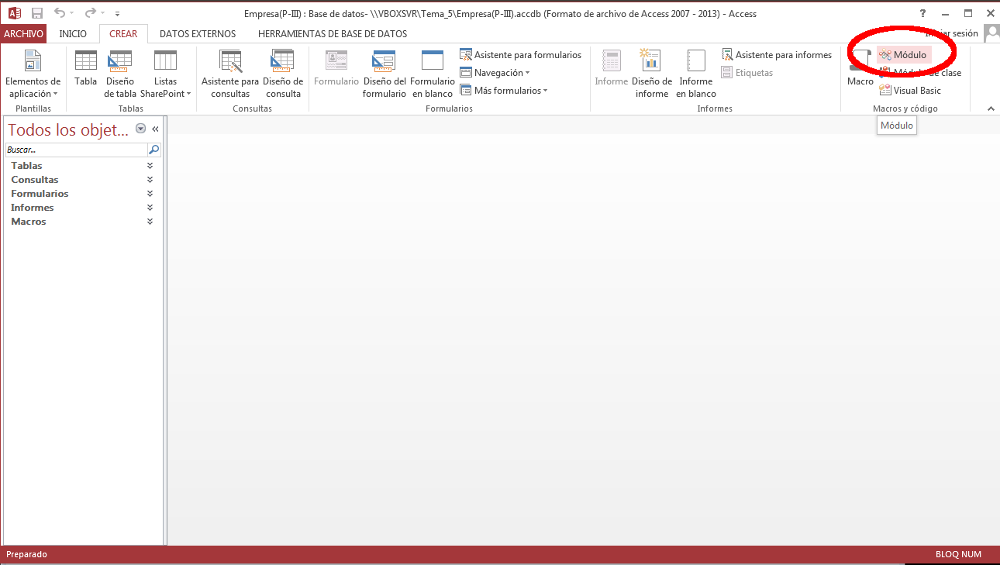
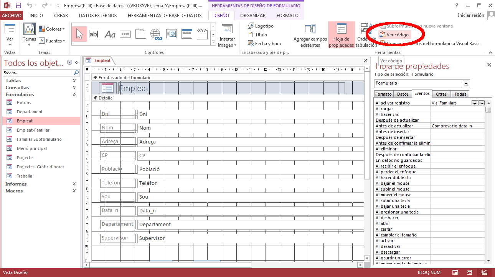
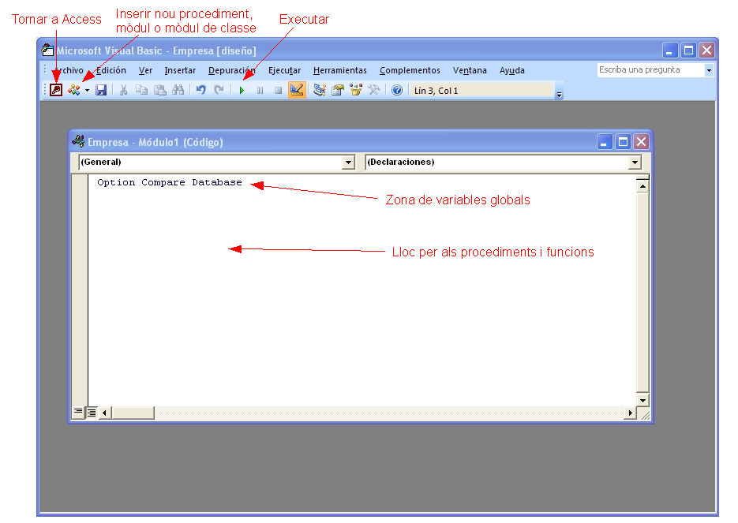
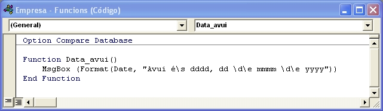

3.1 Creació d'un Mòdul
Per a crear un procediment en un mòdul estàndard, primer s'haurà de crear el mòdul com s'indica en la següent imatge.

Per a visualitzar el mòdul associat a un formulari o informe haurem d'estar en la vista disseny del formulari o informe, i haurem d'apretar en el botonet que hi ha dalt a la dreta (Ver código).

En realitat quan està en marxa Access està també en marxa l'editor de Visual Basic. Podem alternar entre Access i aquest editor amb Alt-F11.
Quan creem un mòdul, del tipus que siga, ens apareixerà l'editor de Visual Basic, que té el següent aspecte:

Per a inserir les funcions o procediments podem triar el botó adequat (ens preguntarà pel nom i si volem que siga una funció o un procediment) o directament començar a escriure Function nom() o Sub nom(). Automàticament, en veure que és un nova funció o procediment, posarà una ratlla separadora i també End Function o End Sub, segons el cas.
Si volem poder utilitzar una variable des de qualsevol funció o procediment del mòdul (s'anomena variable global) l'haurem de col·locar al principi, abans de la declaració de la primera funció o procediment.
Per a executar, podem fer clic en el botó d'executar, estant situats en les línies de la funció.
Exercici 3.1
Crear la següent funció Data_avui en un mòdul estàndard nou que després anomenarem Funcions.

Podeu comprovar com aquest entorn ofereix molt ajuda "en línia", mentre anem escrivint les sentències. Pot servir fins i tot per a comprovar que la sintaxi de les instruccions i de les funcions és correcta.
El que fa la funció és traure la data d'avui (funció Date), amb un determinat format. Hi ha molts caràcters que tenen significat per a la funció Format, com són d per al dia (en distints formats), m per al mes, y per a l'any...
Si volem traure algun d'aquestos caràcters "especials", haurem d'utilitzar davant el caràcter d'escape: \
Podeu consultar més informació en l'ajuda d'Access (F1).
Quan acabeu apreteu al botó de guardar, i us dirà de guardar Módulo1. Poseu-li el nom de Funcions
Exercici 3.2
Col·locar un altre botó en el formulari Botons de manera que s'execute aquesta funció.
En les propietats, en l'esdeveniment "Al hacer clic", s'haurà de posar =Data_avui() (no us oblideu de posar el signe igual)
Exercici 3.3
Una altra manera d'executar la funció és per mig d'una macro.
Crear una macro independent anomenada M_Data_Avui que execute la funció Data_avui(). L'acció que s'ha d'executar en la macro serà EjecutarCódigo.
Llicenciat sota la Llicència Creative Commons Reconeixement NoComercial SenseObraDerivada 2.5